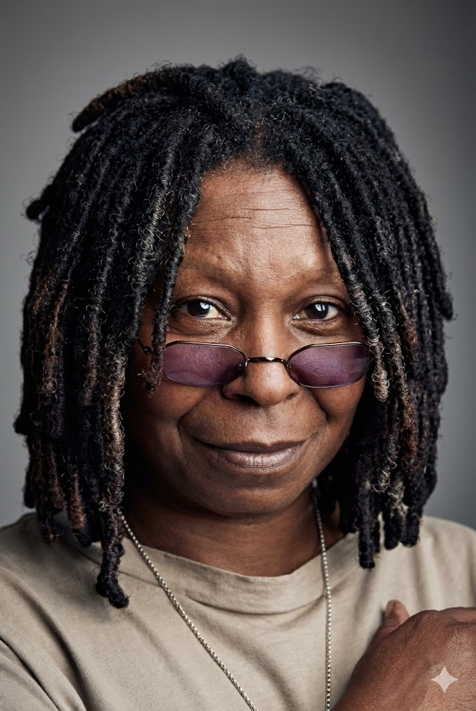
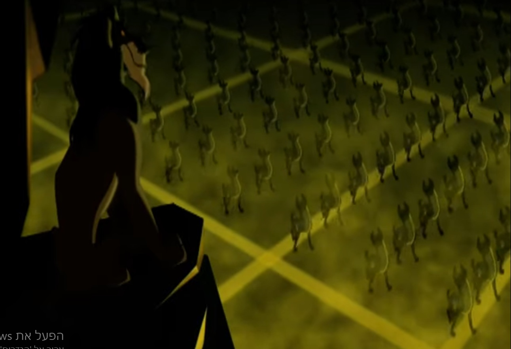

1. המראה: האם רוע הוא כהה?
בניגוד לאריות ה"טובים" שמאופיינים בצבעים חמים וזהובים, הצבועים מעוצבים בצורה מנוגדת, המדגימה את מושג הייצוג:
- צבע עור כהה: שחור ואפור כהה. בתקשורת החזותית, כהות מקושרת לעיתים לסכנה ולרוע.
- סביבת המגורים: "בית הקברות לפילים" – מקום חשוך, ללא צמחייה, מלא עצמות. זוהי דוגמה להבניית המציאות, שבה הסרט מקשר בין גיאוגרפיה מסוימת (שכונות עוני/גטאות) לבין אופי שלילי.

2. פוליטיקה של קול ודיבוב
בגרסה המקורית (אנגלית), הליהוק מעורר מחלוקת ומציג היבטים של סטריאוטיפים אתניים:
- שנזי: דובבה ע"י וופי גולדברג (אפרו-אמריקאית).
- בנזאי: דובב ע"י צ'יץ' מרין (לטיני/היספני).
הצבועים מדברים ב"סלנג רחוב", בעוד האריות (הקבוצה ההגמונית והשולטת) מדברים באנגלית תקנית ומלכותית. הסרט מקשר סמוית בין שפה של מיעוטים לבין "הרעים".

3. מיעוט מודר וחסר פנים
הצבועים מייצגים מעמד נמוך המורחק ממשאבים (הדרה). המוטיבציה שלהם היא רעב.
בסצנות מסוימות הם מוצגים כהמונים חסרי פנים ואינדיבידואליות, מה שמחזק את ההדרה שלהם מהחברה הנורמטיבית והופך אותם ל"אספסוף" מאיים שרק מחכה להשתלטות.